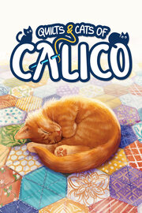

Quilts and Cats of Calico Demo
Quilts and Cats of Calico Demo
Detalles
|  | |
| Tiempo de juego | No Jugado |
| Última actividad | Nunca |
| Añadido | 30/08/2023 9:58:45 |
| Modificado | 30/08/2023 10:01:05 |
| Estado de finalización | Not Played |
| Librería | Steam |
| Fuente | Steam |
| Plataforma | PC (Windows) |
| Fecha de lanzamiento | 24/04/2023 |
| Puntuación de la Comunidad | |
| Puntuación de la Crítica | |
| Puntuación de usuario | |
| Género | |
| Desarrollador | Monster Couch |
| Editor | Flatout Game Monster Couch |
| Característica | Full Controller Support Game Demo Single Player |
| Enlaces | Punto de encuentro Discusiones Guías Noticias Página de la tienda PCGamingWiki Logros |
| Tag | Board Game Casual cats Colorful Controller Cozy Cute Local Co-Op Local multiplayer Multiplayer nature Online Co-Op Puzzle PvP Relaxing Singleplayer Strategy tabletop Turn-based wholesome |
Descripción
Quilts & Cats of Calico is a cozy board game in which the player's main task is to make a quilt from patterned fabric scraps. By smartly combining the colors and patterns of the scraps, the player can not only score points for the completed design but also sew on buttons and attract adorable cats, who have their own preferences for bedding patterns.

Stepping beyond adaptation
In Quilts & Cats of Calico, based on the board game Calico, you will be immersed in a warm, cozy world full of cuddly cats. Here the quilt bends under the weight of their paws and loud purring can be heard. It's a world full of patterns and designs awaiting the master quilt maker.
We also have a few surprises for the Calico fans like variations of the rules and mechanics in the campaign play. In addition to the well-known gameplay scenarios, new ones await to be discovered.
Quilt solo, with friends, or with strangers
Whether you want to quilt solo or prefer to compete with other players, Quilts & Cats of Calico will provide you with the corresponding gameplay mode. You will have cross-platform multiplayer at your disposal, during which you can invite friends or play ranked matches against random players. Online gameplay will include weekly challenges and player rankings. The more peaceful solo mode allows you to face AI of varying difficulty levels and is the perfect tool to hone your skills in a relaxed atmosphere.
Sew your adventures in the city of cat worshippers
In the game, you can also enjoy the story mode campaign. An extraordinary world inspired by the works of Studio Ghibli awaits you. Here cats have great power and influence over people's lives. Take on the role of an itinerant quilter who decides to succeed in a city of cat-worshippers. Climb to the top of the city hierarchy and face the opponent who wants to dominate the world of humans and cats. Create quilts, perfect your craft, and help those you meet on your journey. Don't worry, you won't be alone - along the way, you'll meet friends and, most importantly, cats whose help can prove invaluable…

Spend quality time with your cats
In Quilts & Cats of Calico, cats are active during your games. Sometimes minding their own business, and other times coming to you and your quilt. They will lazily observe the board, romp and run around, and sometimes fall into a blissful nap. They are cats, you never know. You can interact with them during the game, pet them, and shoo them away when they get in the way.

Extended customization options
The game is full of cats, but there could always be more! In Quilts & Cats of Calico, you can create your own, making your game even more wholesome! You can give it a name, choose the color of its fur, and put on different outfits. If you wish, it will appear on the board during your gameplay. It will also be possible to choose a different player's portrait and background for the game. Pick what you like best!

Beautiful, relaxing music
We asked Pawel Górniak, the composer responsible for the soundtrack to the digital version of Wingspan, to create the music for Quilts & Cats of Calico. Thanks to it, you will not only be able to deeply feel the atmosphere of the game but let yourself be carried away by blissful relaxation.
https://store.steampowered.com/app/1993180?utm_source=calico&utm_medium=in_steam
Stepping beyond adaptation
In Quilts & Cats of Calico, based on the board game Calico, you will be immersed in a warm, cozy world full of cuddly cats. Here the quilt bends under the weight of their paws and loud purring can be heard. It's a world full of patterns and designs awaiting the master quilt maker.
We also have a few surprises for the Calico fans like variations of the rules and mechanics in the campaign play. In addition to the well-known gameplay scenarios, new ones await to be discovered.
Quilt solo, with friends, or with strangers
Whether you want to quilt solo or prefer to compete with other players, Quilts & Cats of Calico will provide you with the corresponding gameplay mode. You will have cross-platform multiplayer at your disposal, during which you can invite friends or play ranked matches against random players. Online gameplay will include weekly challenges and player rankings. The more peaceful solo mode allows you to face AI of varying difficulty levels and is the perfect tool to hone your skills in a relaxed atmosphere.
Sew your adventures in the city of cat worshippers
In the game, you can also enjoy the story mode campaign. An extraordinary world inspired by the works of Studio Ghibli awaits you. Here cats have great power and influence over people's lives. Take on the role of an itinerant quilter who decides to succeed in a city of cat-worshippers. Climb to the top of the city hierarchy and face the opponent who wants to dominate the world of humans and cats. Create quilts, perfect your craft, and help those you meet on your journey. Don't worry, you won't be alone - along the way, you'll meet friends and, most importantly, cats whose help can prove invaluable…
Spend quality time with your cats
In Quilts & Cats of Calico, cats are active during your games. Sometimes minding their own business, and other times coming to you and your quilt. They will lazily observe the board, romp and run around, and sometimes fall into a blissful nap. They are cats, you never know. You can interact with them during the game, pet them, and shoo them away when they get in the way.
Extended customization options
The game is full of cats, but there could always be more! In Quilts & Cats of Calico, you can create your own, making your game even more wholesome! You can give it a name, choose the color of its fur, and put on different outfits. If you wish, it will appear on the board during your gameplay. It will also be possible to choose a different player's portrait and background for the game. Pick what you like best!
Beautiful, relaxing music
We asked Pawel Górniak, the composer responsible for the soundtrack to the digital version of Wingspan, to create the music for Quilts & Cats of Calico. Thanks to it, you will not only be able to deeply feel the atmosphere of the game but let yourself be carried away by blissful relaxation.
https://store.steampowered.com/app/1993180?utm_source=calico&utm_medium=in_steam